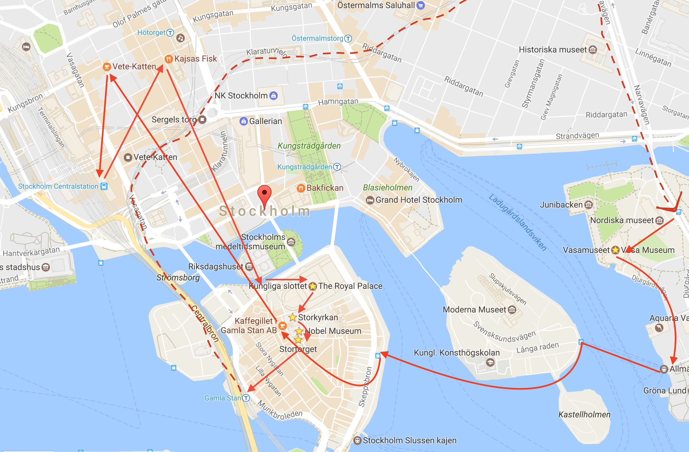

2017年3月3日第一次从Uppsala到Stockholm
一次心血来潮之举，
前一天晚上只进行了简单的规划，
结果却是恰到好处的一次旅行。
【行程地图】如下：

##行程
- 10:00 - 11:00
本来计划更早从Uppsala出发，结果睡过了头，不过毫不影响，10点从Uppsala C坐Commuter Train到Stockholm C，由于有UL月票，只需购买SL一日票（学生价：80kr+20kr卡片工本费）。一个小时的车程，如同坐公交车一样，随意找个位置坐下就行，这趟车竟然没有人查票，不过有发小广告的，没人看还二次回收，甚是节约成本。
11点到斯京后，步行至Kajsas Fisk餐厅吃中饭，这是一家在TripAdvisor上排名最高的平价鱼餐厅，招牌Kajsas soppa(Kajsas鱼汤)（110kr）可免费续汤，有面包沙拉配套，汤很实诚有各种鱼肉，虾肉，蛤蜊等，个人喝多了有点咸，基本上一碗就足够了。
饱腹之后，从中央车站所在的城区，顺着一整条步行街直走就能到老城区Gamla Stan，大约15min的脚程，会路过各种纪念品商店、有名的皇后大街、无数H&M，然后走过一座桥就到老城区了。
老城坐落在市中心的一座小岛上，封面图是从连接老城的桥上拍摄的，在桥上可以看到远方的骑士岛教堂，桥底的水清澈至极，倒映出的景色就像一幅文艺的水彩，去不了威尼斯，但可以在斯京感受一下”北方威尼斯”的风韵。